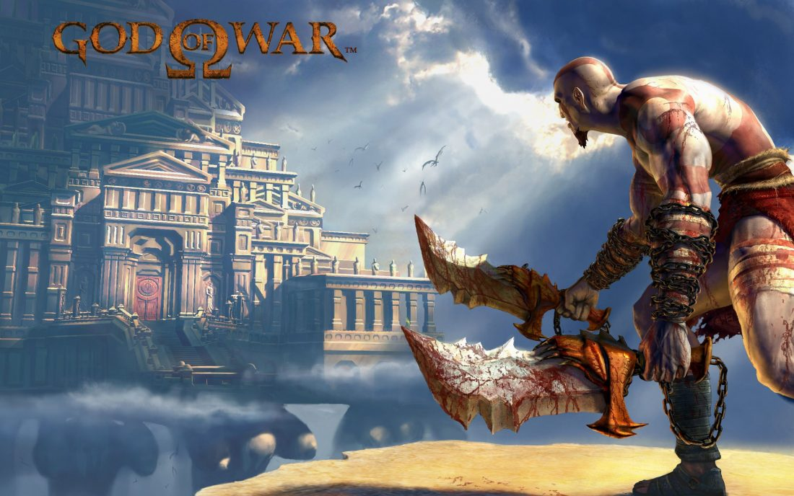

As clássicas Lâminas do Caos são a marca registrada de Kratos. O conjunto de lâminas ligadas por correntes aos braços do personagem foi forjado pelo próprio Ares, o antigo deus da guerra grego ao qual o espartano jurou lealdade.
Dada a Kratos pela deusa da caça Artemis logo após ele entrar no Templo de Pandora, a Lâmina de Artemis é uma espada grande e pesada. Apesar de golpes lentos, ela causa muito dano.
O Martelo Bárbaro é pesado e lento, mas poderoso. Passado por gerações de reis bárbaros, Kratos consegue “roubá-lo” das mãos de Alrik. Suas habilidades incluem golpes potentes e a possibilidade de invocar almas para lhe ajudar nas lutas.
Originalmente, a Lança do Destino foi usada pelo Cavaleiro das Trevas, mas Kratos a encontra no corpo de um Grifo morto. Ela está imbuída de cristais roxos e pode desferir golpes mortais — assim como disparar projéteis perfurantes.
A Lâmina do Olimpo é uma espada divina que deu o poder necessário para Zeus derrotar os Titãs. Ela também é um dos poucos itens (além da Caixa de Pandora e da Manopla de Zeus) que conseguem ferir outros deuses.
A poderosa Manopla de Zeus também consegue ferir outras divindades e foi usada pelo deus do trovão para acorrentar os Titãs. O item é encontrado por Kratos quando ele é enviado ao Submundo pelos cavalos flamejantes de Hélios.
As Lâminas do Exílio foram criadas pelo espírito de Atena no início de God of War III, logo após Kratos cair no Rio Estige e as almas inutilizarem as Lâminas de Atena. Seu poder mágico convoca as lanças e os escudos dos irmãos espartanos exilados, que protegem o deus da guerra e causam dano massivo nos inimigos.
Kratos consegue as Garras de Hades durante sua luta contra o deus do submundo no terceiro jogo. Seu poder é semelhante aos das Lâminas do Exílio, porém, os movimentos são executados mais lentamente — isso sem mencionar o poder de invocar almas condenadas para o combate.
Nemean Cestus A Nemean Cestus é um par de manoplas que Hércules ganhou ao derrotar o Leão de Nemeia em um de seus 12 de trabalhos na mitologia grega. Além do formato chamativo em cabeça de leão, o item é o único capaz de destruir o Ônix, um tipo de rocha que aparece com uma certa frequência em God of War III.
O Chicote Nêmesis foi forjado para Kratos pelo deus ferreiro Hefesto. O material usado na criação se chama Omphalos e estava no estômago do titã Chronos, que confundiu o objeto com o bebê Zeus e o engoliu muitos anos antes dos acontecimentos do jogo. Em God of War III, o espartano consegue o cristal de volta e obriga a divindade a criar a arma para ele.
Arms of Sparta (Braços de Esparta) Kratos manejou os Braços de Esparta muitos anos antes de servir Ares, quando ainda era capitão de Esparta. O conjunto consiste em um escudo e uma lança, que pode ser arremessada à distância ou usada em investidas corpo a corpo.
O Machado Leviatã, forjado pelos irmãos Huldra (Brok e Sindri), é uma das armas mais divertidas de todos os títulos da franquia God of War. Ele foi dado a Kratos pela sua segunda esposa, Faye, e é um item altamente personalizável — isso sem mencionar seus poderes de gelo que causam danos massivos nos oponentes.
Forjada em Svartalfheim pela Senhora da Forja, a Lança Draupnir foi uma das grandes novidades do Ragnarok. Além de ser flexível e poderosa para o combate corpo a corpo, ela também é capaz de se replicar magicamente. O item representa os valores de Esparta: disciplina, força e honra.